1はじめかた
インストールは要りません。zip をダウンロードして展開し、中の Mendako.exe を起動するだけです。
-
ダウンロードする。ページ上部の「最新版をダウンロード」を押します。リリースのページが開くので、下のほうにある「Assets」の中の
Mendako-…-win-x64.zipを選んでください（約 60 MB です）。 -
展開する。zip を右クリックして「すべて展開」を選びます。中身は
Mendako.exeが 1 つだけです。好きなフォルダに置いてかまいません。あとで「Windows 起動時に開始」を使うなら、先に置き場所を決めてください。
Mendako.exeを別の場所へ動かすと、自動で起動しなくなります。 -
起動する。
Mendako.exeをダブルクリックします。しばらくすると、タスクバーの上にたまごが現れます。
「WindowsによってPCが保護されました」と出るのは、このアプリに Microsoft の署名がないためです。個人が作ったアプリでは、よくあることです。次の順に進めば起動できます。
- メッセージの中の 詳細情報 を押します。
- 下に出てくる 実行 を押します。
ソースコードは GitHub で公開しています。
動作環境
- Windows 10 または 11 の 64 ビット版
- ほかに入れるソフトはありません（.NET も不要です）
- モニタが複数あっても動きます。くわしくは こまったとき を見てください
2育てる
メンダコは、たまごから 5 つの姿に育ちます。世話をすると、次の姿に近づきます。
5 つの姿
-
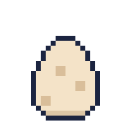
たまごここからはじまります -
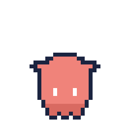
稚メンダコいちばん早くて
約 10 時間 -
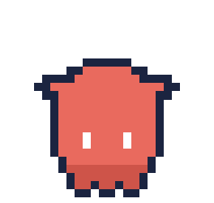
若メンダコいちばん早くて
約 3 日 -
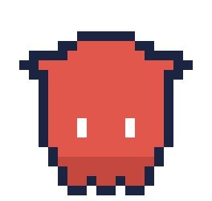
メンダコいちばん早くて
約 10 日 -
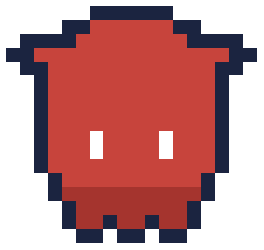
ぬしメンダコいちばん早くて
約 31 日
日数は、たまごからの合計です。おなか・げんき・なつきがずっと満点だったときの、いちばん早い目安です。実際は、これより少し長くかかります。
世話は 3 つ
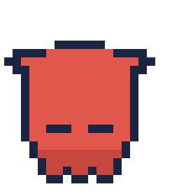
ごはん
メンダコの体を ダブルクリック します。おなかが増えて、なつきも少し上がります。
おなかは、起きているあいだに約 1 日（24 時間）で空になります。おなかが 25 以下になると、育たなくなります。
おなかがいっぱい（90 以上）のときと、寝ているときは、食べません。
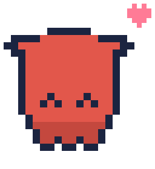
なでる
メンダコの体の上で、ボタンを押さずに、カーソルを 左右に何度か動かします。なつきが上がります。
なつきが上がるのは 10 分に 1 回までです。それより早くなでても、喜んでくれますが、なつきは増えません。放っておくと、なつきは少しずつ下がります（満点から 0 まで約 20 日）。
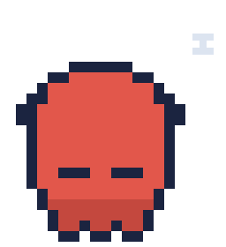
寝る
夜の 23 時から朝の 7 時までのあいだに、げんきが 70 より低いと、自分で寝ます。げんきが 15 以下になったときは、昼でも寝ます。
寝ているあいだは、げんきが回復します（空から満タンまで約 7 時間）。育つ速さもほとんど変わりません。ただし、ごはんとなでるは受けつけません。
メニューの 寝かせる / 起こす でも切りかえられます。昼間にげんきが十分あるときは、寝かせてもすぐに起きてしまいます。
おなか・げんき・なつきが高いほど、早く育ちます。ごはんを忘れても、メンダコがいなくなることはありません。
ステータスの見方
メンダコの上にカーソルを乗せると、ステータスカードが出ます。
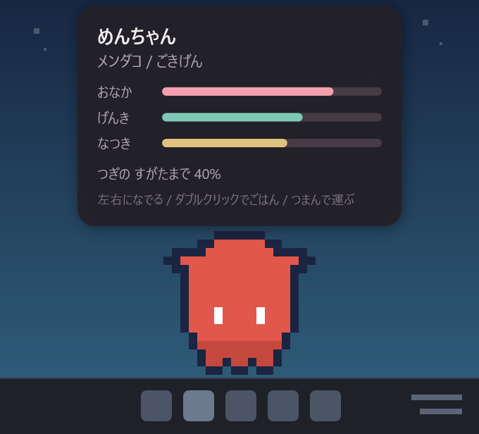
| おなか | ごはんで増え、時間がたつと減ります。 |
|---|---|
| げんき | 起きていると減り、寝ると回復します。 |
| なつき | ごはんとなでるで増え、放っておくと少しずつ減ります。 |
| つぎの すがたまで | 次の姿までの進み具合です。ぬしメンダコになると「もう じゅうぶん おおきい」と出ます。 |
名前の下には、いまの気分が出ます。
| 気分 | こんなとき |
|---|---|
| ごきげん | おなかが 60 以上、げんきが 50 以上、なつきが 55 以上のとき |
| ふつう | ほかのどれにも当てはまらないとき |
| おなかぺこぺこ | おなかが 25 以下のとき。ごはんをあげましょう |
| ねむねむ | げんきが 20 以下のとき |
| かまってほしい | なつきが 20 以下のとき。なでてあげましょう |
| しょんぼり | おなかが 15 以下で、なつきも 25 以下のとき |
| すやすや | 寝ているとき |
タスクトレイのアイコンを左クリックすると、同じ内容が通知で出ます。
アプリを閉じているあいだも、時間は進みます
メンダコの時間は、現実の時計で進みます。アプリを終了していても、パソコンの電源を切っていても、その間にお腹はすきますし、育ちます。
ただし、起動したときにまとめて進むのは、最大 3 日分です。それより長くあけたときは、直前の 3 日分だけを数えます。帰ってきたときは「おかえりなさい」と通知が出ます。おなかがすいているので、ごはんをあげてください。
3さわる
メンダコの体の上だけが操作できます。まわりの透明な部分のクリックは、下のウィンドウにそのまま届きます。
| 操作 | どうなるか |
|---|---|
| なでる | 体の上でボタンを押さずに、カーソルを左右に何度か動かします。喜んでハートを出します。 |
| つつく | 1 回クリックします。びっくりして、ぴょんと跳ねます。それだけで、何も変わりません。 |
| ごはん | ダブルクリックします。もぐもぐ食べます。 |
| つまむ | 体の上でボタンを押したまま動かします。つまんで運べます。放すとふわふわ降りて、その場所のタスクバーに居着きます。別のモニタへも運べます。場所は覚えているので、次に起動したときも同じところにいます。 |
| カーソルを乗せる | ステータスカードが出ます。カーソルが乗っているあいだは、泳ぎません。 |
| 右クリック | メニューが出ます（下の表）。 |
何もしないときは、ひとりで泳いだり、きょろきょろしたり、あくびをしたり、ぺたんと平たくなったりします。
メニュー
メンダコを右クリックするか、タスクトレイのアイコンを右クリックすると出ます。トレイのアイコンが見つからないときは、タスクバー右側の「^」の中を見てください。
| 項目 | はたらき | メンダコ | トレイ |
|---|---|---|---|
| ごはんをあげる | ダブルクリックと同じです。 | ○ | ○ |
| なでる | なでたことにします。 | ○ | ○ |
| 寝かせる / 起こす | 寝ているときは「起こす」に変わります。 | ○ | ○ |
| ようすを見る | おなか・げんき・なつきを通知で見せます。 | － | ○ |
| もちもの | 拾ったアイテムを売る・置く窓を開きます。（4） | ○ | ○ |
| おみせ | 飾りを買う・付ける・外す窓を開きます。（6） | ○ | ○ |
| Windows 起動時に開始 | チェックを付けると、パソコンを起動したときに自動で始まります。 | － | ○ |
| 全画面アプリ中は隠す | ゲームやプレゼンの邪魔にならないよう、全画面のあいだは隠れます。はじめからオンです。 | ○ | ○ |
| 終了 | メンダコを終了します。そのときの状態は保存されます。 | ○ | ○ |
トレイのアイコンを左クリックすると、「ようすを見る」と同じ通知が出ます。
4アイテムを拾う
メンダコ（4 つめの姿）に育つと、散歩のついでに、アイテムを拾ってくるようになります。
- 3 時間に 1 個、拾ってきます。メンダコに育った時から数えはじめるので、最初の 1 個は、育って 3 時間後です。ぬしメンダコになっても同じです。
- アイテムは全部で 100 種類あります。食べ物 15 種、草花や素材 22 種、道具や武具（ポーションなど）38 種、宝物 25 種です。
- 宝物は、まれにしか拾えません。目安は 40 回に 1 回ほどです。
- アプリを閉じているあいだも拾います（数えるのは最大 3 日分までです）。拾うと通知が出ます。
もちもの
メニューの もちもの を開くと、拾ったアイテムが一覧で見られます。持てるのは 20 個までです。同じアイテムも 1 個ずつ数えます。
20 個になると、拾えません。そのあいだに過ぎた分を、あとでまとめて拾うこともありません。早めに売って、あきを作ってあげてください。
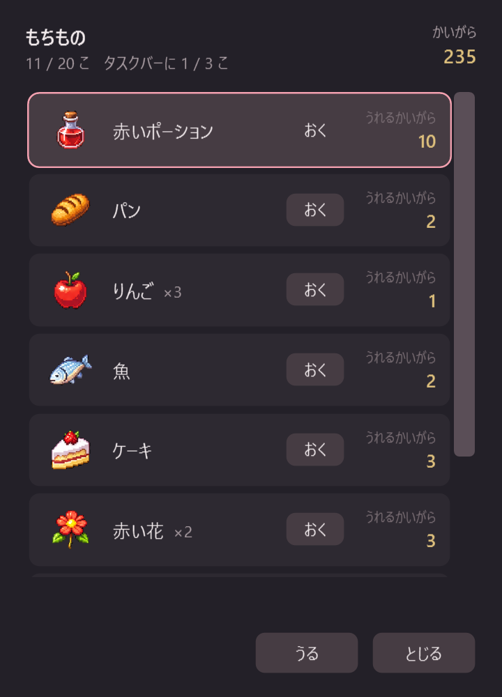
うる
アイテムの行を選んで うる を押すと、1 個ずつ売れて、かいがらがもらえます。右上の数字が、いま持っているかいがらです。
売値はアイテムごとに決まっていて、1 かいがらから 100 かいがらまでです。食べ物は 1〜3 かいがら、宝物は 30〜100 かいがらです。かいがらは、アイテムを売ったときにだけ増えます。
売らずに置いて遊ぶこともできます。次の節を見てください。
5置いて遊ぶ
持っているアイテムは、タスクバーの上に置けます。置くと、メンダコが泳いで近寄ってきます。
- メニューの もちもの を開きます。
- 置きたいアイテムの行にある おく を押します。
- メンダコの近くのタスクバーの上に、アイテムが置かれます。
置けるのは、同時に 3 個までです。置いたアイテムはもちものから減ります。
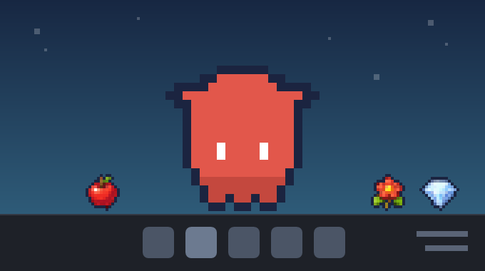
分類ごとの反応
メンダコはアイテムのそばまで来て、分類ごとに違う反応をします。
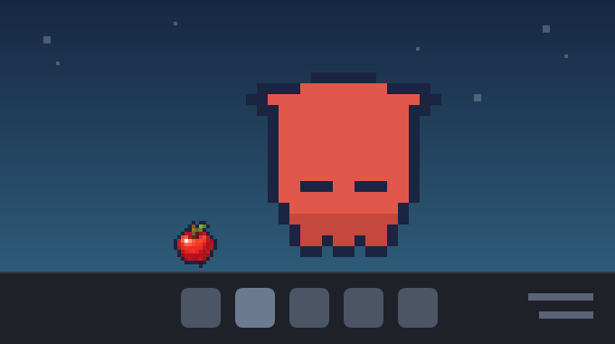
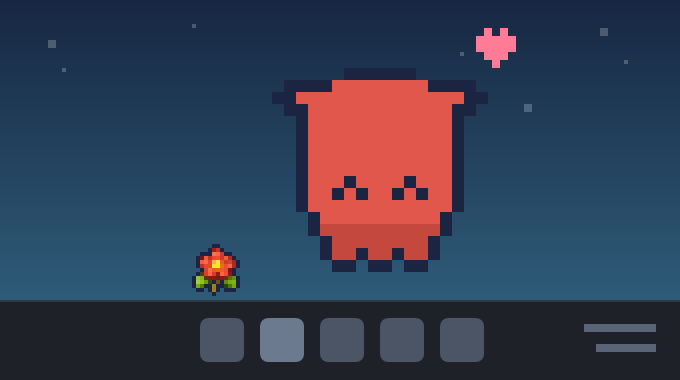
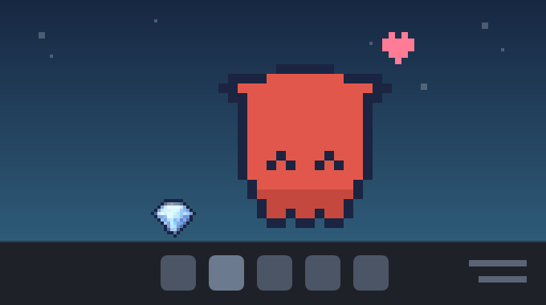
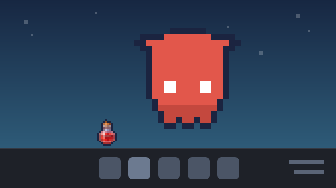
| 分類（例） | 反応 | そのあと |
|---|---|---|
| 食べ物りんご、パン、魚、ケーキ | 食べます。ごはんと同じで、おなかとなつきが増えます。 | 食べたアイテムは消えます。おなかがいっぱい（90 以上）のときは、食べずに残します。 |
| 草花・素材赤い花、四つ葉のクローバー | 喜びます。 | そのまま残ります。 |
| 宝物ダイヤモンド、金の指輪 | 見とれます。 | そのまま残ります。 |
| 道具・武具赤いポーション、巻物 | つついて、びっくりします。 | そのまま残ります。 |
- 一度反応したアイテムには、10 分のあいだ近寄りません。
- 寝ているあいだと、たまごのあいだは、近寄りません。
- 置いたアイテムを クリックすると、もちものに戻ります。もちものがいっぱいのときは戻らないので、先に売ってください。
- 片付けて置き直すと、新しいアイテムとして数えます。すぐにまた反応します。
6おみせと着せ替え
かいがらを使って、メンダコに飾りを付けられます。飾りは見た目だけで、育ち方は変わりません。
メニューの おみせ を開きます。飾りは 5 種類で、値段は 160〜360 かいがらです。
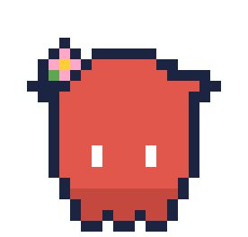
いちりんの花160 かいがら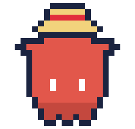
むぎわらぼうし220 かいがら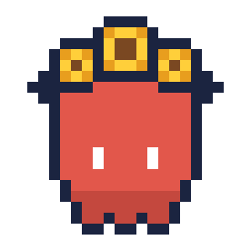
ひまわりのかんむり260 かいがら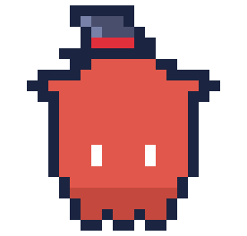
ちいさなシルクハット310 かいがら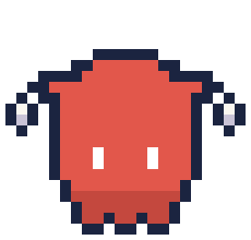
しんじゅのイヤリング360 かいがら
買う・付ける・外す
- かいがらが足りているときは、かう が押せます。足りないときは「あと ○ かいがら」と出て、押せません。
- 買っただけでは付きません。買うと つける に変わるので、押してください。
- 付けているあいだは はずす に変わります。付け外しは何度でもでき、かいがらはかかりません。
付けられるのは、同時に 1 つです。別の飾りを付けると、いま付けているものは外れます。
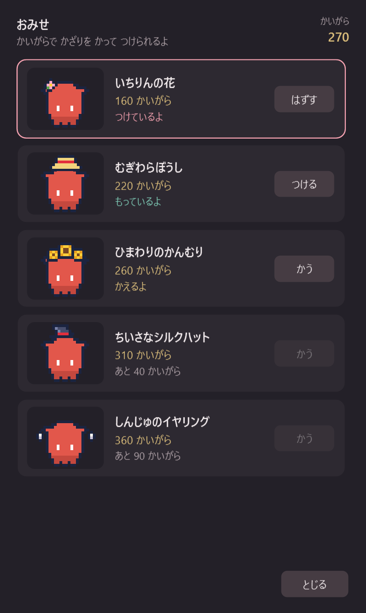
かいがらは、アイテムを売らないと増えません。食べ物は 1〜3 かいがらなので、買い物には宝物（30〜100 かいがら）が頼りになります。
7こまったとき
メンダコが見つからない・出てこない
- タスクバー右側の「^」の中に、メンダコのアイコンがありますか。あれば、起動はしています。右クリックして ようすを見る を選ぶと確かめられます。
- 全画面のゲームやプレゼンの最中は、隠れています。全画面をやめると出てきます。
- メンダコは 1 匹しか起動できません。すでに起動していると、2 回目は何も起きません。
- モニタが複数あるときは、Windows の設定で「タスクバーをすべてのディスプレイに表示する」をオンにしてください。オフのモニタには住めません。
全画面のゲームやプレゼンの上に出てしまう（隠れてほしい・隠れてほしくない）
メンダコを右クリックして、全画面アプリ中は隠す の切りかえをします。チェックが付いていると、全画面のあいだは隠れます。はじめから付いています。
ただし、サブモニタで全画面にしたアプリは見つけられません。そのモニタにいるメンダコは、出たままになります。
パソコンを起動したら自動で始めたい
タスクトレイのアイコンを右クリックして、Windows 起動時に開始 にチェックを付けます。外すと、自動では始まらなくなります。
自動で始まるのは、チェックを付けたときの Mendako.exe です。ほかの場所へ動かしたら、いったんチェックを外して、付け直してください。
育てたデータはどこにある？
次のフォルダに、2 つのファイルがあります。
%LOCALAPPDATA%\Mendakostate.json… メンダコの育ちぐあい、もちもの、かいがら、飾りsettings.json… 居場所と、全画面で隠す設定
エクスプローラーの上のアドレス欄に、上のパスを貼りつけて Enter を押すと、フォルダが開きます。
1 からやり直して、新しいたまごから育てたいときは、メンダコを終了してから state.json を消します。次に起動すると、新しいたまごが現れます。
急にたまごに戻った（state.json.bad があるとき）
state.json が壊れていて読めないと、メンダコは新しいたまごから始まります。このとき、読めなかったファイルは消されません。同じフォルダに state.json.bad という名前で残ります。すでに .bad があるときは、state.json.20261118-120000.bad のように、日時が付きます。settings.json も同じです。
元に戻したいときは、メンダコを終了してから、新しくできた state.json を消し、state.json.bad の名前を state.json に変えます。ただし、壊れた中身は、戻しても読めないことがあります。
やめたい（アンインストール）
インストーラは使っていないので、消すのは 3 つです。
- 自動で始める設定にしていたら、タスクトレイのアイコンを右クリックして、Windows 起動時に開始 のチェックを外します。
- メンダコを右クリックして、終了 を選びます。
Mendako.exeを捨てます。育てたデータも消すなら、フォルダ%LOCALAPPDATA%\Mendakoも消します。
これで何も残りません。
コマンドで消すとき（PowerShell）
# 1. 常駐を止める
Stop-Process -Name Mendako -ErrorAction SilentlyContinue
# 2. 自動起動の登録を消す
Remove-ItemProperty -Path 'HKCU:\Software\Microsoft\Windows\CurrentVersion\Run' -Name Mendako -ErrorAction SilentlyContinue
# 3. 育成状態と設定を消す
Remove-Item -Recurse -Force "$env:LOCALAPPDATA\Mendako"それでも解決しない・不具合を見つけた
GitHub の Issues に書いてください。